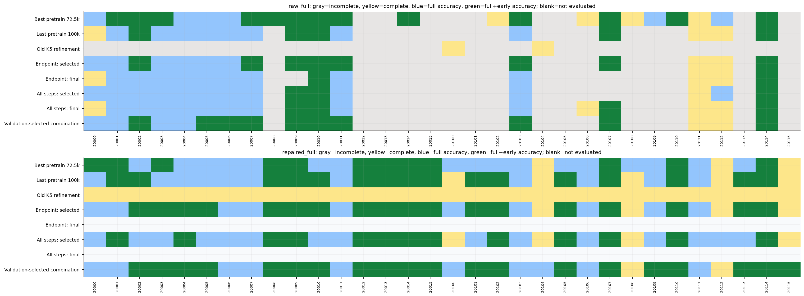
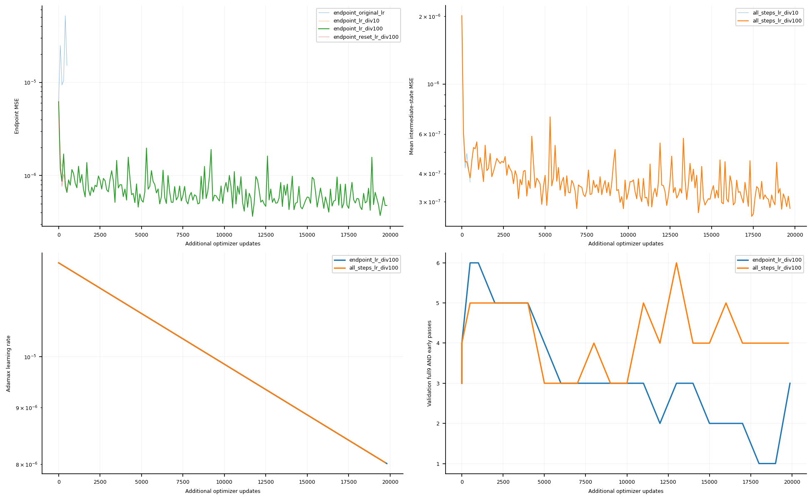

이전 완료 실험의 모델·데이터·소스는 그대로 보존했다. 같은 100k 사전학습 가중치와 학습 배치에서 K5로 전환할 때 기울기가 크게 커지는 현상을 확인한 뒤, 학습률 및 Adam 상태만 바꾼 endpoint 대조군과 모든 중간 오차를 평균하는 별도 개발군을 비교했다. 후자는 원래 0D 논문의 끝점 전용 loss와 다르다. 물리 soft constraint, 훈련 중 clipping·보정은 없다.
6개 후보의 동일 업데이트 진단 후 검증만으로 각 family 한 개를 골랐다. 진단 마지막 가중치·Adam·RNG를 정확히 이어 학습했다. 선택 가중치와 마지막 가중치를 둘 다 평가하며, 선택 update가0이면 원래100k 모델로 되돌아간 결과임을 뜻한다. 사전학습 최적72.5k와100k, 이전118.7k 실패 가중치도 고정 대조군이다. loss 정의가 다른 두 family의 loss 숫자를 같은 오차로 직접 비교하면 안 된다.
복원 ANN은 동일한 원본 가중치·Adam·RNG에서 균일 시간 추출과 화학 변화량을 따른 시간 추출을 별도 비교했다. 구조·MSE·학습률·업데이트 목표는 같다. 기본 operator 비교는 원래 복원 ANN을 공통으로 쓴다. combined_selected 한 행만 검증에서 고른 operator/복원 ANN 조합이며, 어떤 조합인지 selection_frozen.json에 명시했다. 복원 ANN 변경의 효과를 operator 자체 개선과 혼동하지 않는다.
훈련99개 궤적과 기존 train-only 정규화를 그대로 썼다. 검증은 기존 보간12개와 새 외삽12개다. 별도로 고정한 새 보간16개·외삽16개는 선택 완료 후 처음 평가했다. historical 결과127개는 이미 본 테스트의 재평가이며 새로운 독립 성능 증거와 구분한다. 단일seed11,1atm,1ms,20us씩50번 자기 예측을 되먹인다.
통과는 각 변수 NRMSE=RMSE(Cantera,NN)/RMS(Cantera)가 모두0.1 이하인 경우다. 비율이며 백분율이 아니다. 전체9는T+8반응종, 대표5는T/H2/H/O2/H2O이고N2/AR은 별도다. 불완주에는 전체기간 점수를 주지 않는다. raw는 음수/온도범위 등의 상태 검사에서 중단한다. unconstrained는 음수도 허용한 곡선 진단이며 유효한 raw 성공으로 세지 않는다. repaired는 clipping+원소투영+엔탈피 보정이 있는 별도 추론 시스템이다. 전체+초기 통과는1ms 전체와초기0.1ms를 모두 만족해야 한다.
| 평가집합 | 모델 | 방식 | 전체수 | 완주 | 정확도+유효성 | 전체+초기 정확도 |
|---|---|---|---|---|---|---|
| test_extrapolation | best_pretrain | raw_full | 16 | 10 | 6 | 4 |
| test_extrapolation | best_pretrain | repaired_full | 16 | 16 | 13 | 3 |
| test_extrapolation | best_pretrain | representative_unconstrained | 16 | 16 | 6 | 5 |
| test_extrapolation | last_pretrain | raw_full | 16 | 5 | 3 | 2 |
| test_extrapolation | last_pretrain | repaired_full | 16 | 16 | 11 | 7 |
| test_extrapolation | last_pretrain | representative_unconstrained | 16 | 16 | 3 | 3 |
| test_extrapolation | previous_refinement | raw_full | 16 | 2 | 0 | 0 |
| test_extrapolation | previous_refinement | repaired_full | 16 | 16 | 0 | 0 |
| test_extrapolation | previous_refinement | representative_unconstrained | 16 | 16 | 0 | 0 |
| test_extrapolation | endpoint_selected | raw_full | 16 | 5 | 3 | 3 |
| test_extrapolation | endpoint_selected | repaired_full | 16 | 16 | 12 | 7 |
| test_extrapolation | endpoint_selected | representative_unconstrained | 16 | 16 | 4 | 4 |
| test_extrapolation | endpoint_final | raw_full | 16 | 4 | 2 | 1 |
| test_extrapolation | endpoint_final | representative_unconstrained | 16 | 16 | 2 | 1 |
| test_extrapolation | all_steps_selected | raw_full | 16 | 4 | 3 | 1 |
| test_extrapolation | all_steps_selected | repaired_full | 16 | 16 | 12 | 5 |
| test_extrapolation | all_steps_selected | representative_unconstrained | 16 | 16 | 3 | 3 |
| test_extrapolation | all_steps_final | raw_full | 16 | 6 | 3 | 2 |
| test_extrapolation | all_steps_final | representative_unconstrained | 16 | 16 | 3 | 2 |
| test_extrapolation | combined_selected | raw_full | 16 | 5 | 3 | 3 |
| test_extrapolation | combined_selected | repaired_full | 16 | 16 | 14 | 9 |
| test_extrapolation | combined_selected | representative_unconstrained | 16 | 16 | 4 | 4 |
| test_interpolation | best_pretrain | raw_full | 16 | 13 | 13 | 9 |
| test_interpolation | best_pretrain | repaired_full | 16 | 16 | 16 | 9 |
| test_interpolation | best_pretrain | representative_unconstrained | 16 | 16 | 13 | 13 |
| test_interpolation | last_pretrain | raw_full | 16 | 11 | 10 | 3 |
| test_interpolation | last_pretrain | repaired_full | 16 | 16 | 16 | 9 |
| test_interpolation | last_pretrain | representative_unconstrained | 16 | 16 | 10 | 8 |
| test_interpolation | previous_refinement | raw_full | 16 | 0 | 0 | 0 |
| test_interpolation | previous_refinement | repaired_full | 16 | 16 | 0 | 0 |
| test_interpolation | previous_refinement | representative_unconstrained | 16 | 16 | 0 | 0 |
| test_interpolation | endpoint_selected | raw_full | 16 | 11 | 11 | 5 |
| test_interpolation | endpoint_selected | repaired_full | 16 | 16 | 16 | 11 |
| test_interpolation | endpoint_selected | representative_unconstrained | 16 | 16 | 11 | 10 |
| test_interpolation | endpoint_final | raw_full | 16 | 10 | 9 | 1 |
| test_interpolation | endpoint_final | representative_unconstrained | 16 | 16 | 9 | 3 |
| test_interpolation | all_steps_selected | raw_full | 16 | 11 | 11 | 2 |
| test_interpolation | all_steps_selected | repaired_full | 16 | 16 | 16 | 8 |
| test_interpolation | all_steps_selected | representative_unconstrained | 16 | 16 | 11 | 9 |
| test_interpolation | all_steps_final | raw_full | 16 | 11 | 10 | 2 |
| test_interpolation | all_steps_final | representative_unconstrained | 16 | 16 | 10 | 4 |
| test_interpolation | combined_selected | raw_full | 16 | 11 | 11 | 7 |
| test_interpolation | combined_selected | repaired_full | 16 | 16 | 16 | 11 |
| test_interpolation | combined_selected | representative_unconstrained | 16 | 16 | 11 | 10 |
Raw 전체변수 · 보정 전체변수 · Cantera 점화구간 확대 · 대표변수 곡선 진단 · 변수별 NRMSE · 집계표 · 공통 완주조건 비교


Public Burke10종25개 Cantera entry는 저자가 기술한20반응 파일 자체가 아니다. 비공개 융합 코드와 정확한 반응기구 일치가 확보되지 않은 한계는 남는다. 업데이트 목표나 시간상한 종료를 평탄 도달로 부르지 않는다. 이 보고서의 생성·검증 성공은 문헌 성능 재현 성공을 자동으로 뜻하지 않는다.